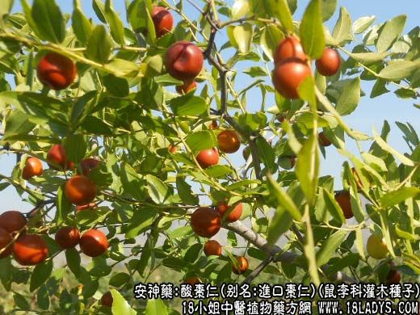

【中药概述】
酸枣仁，别名：进口枣仁、枣仁、酸枣核，为鼠李科灌木或小乔木酸枣的种子。甘，平。归心、肝经。
1．补养心肝：用于心肝血虚的心烦、失眠、多梦、惊悸、怔忡等症，如（天王补心丹）、（<金匮要略>酸枣仁汤）。
2．敛汗止汗：用于体虚自汗、盗汗、津伤口渴，常配参芪五味子，浮小麦，山茱萸等。
【药效鉴别】
酸枣仁能敛汗，并能生津，对久病失血，或忧思劳伤心脾而出现疲乏、出汗、烦渴、心惊等，可配生地，白芍，山萸，五味子，牡蛎等。一般偏于心脾不足气血两虚者，用归脾汤；
偏于肝胆虚热者，常配知母，茯苓，川芎，甘草；偏于阴虚肝旺者，常配白芍，生石决明，生地，龙齿，茯苓，生牡蛎等。
【药理作用】
1.能抑制中枢神经系统，有镇静催眠作用。生用或微炒用，如果炒枯则失去镇静效能。
2.煎剂有镇静、安眠作用。
【化学成分】
含三萜类桦木素、桦木酸、蛋白质、脂肪油、甾醇、有机酸等。
【用量用法】
10——20g，水煎服。亦可研末，睡前吞服。
本文解释权归中药名称大全，本文地址https://www.daquan.com/post/1961.html